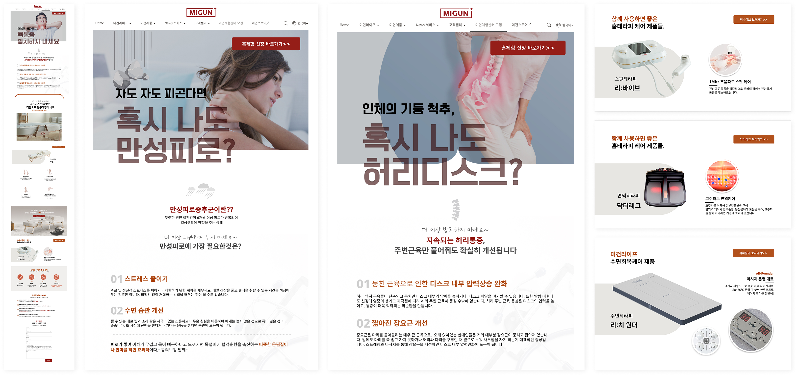
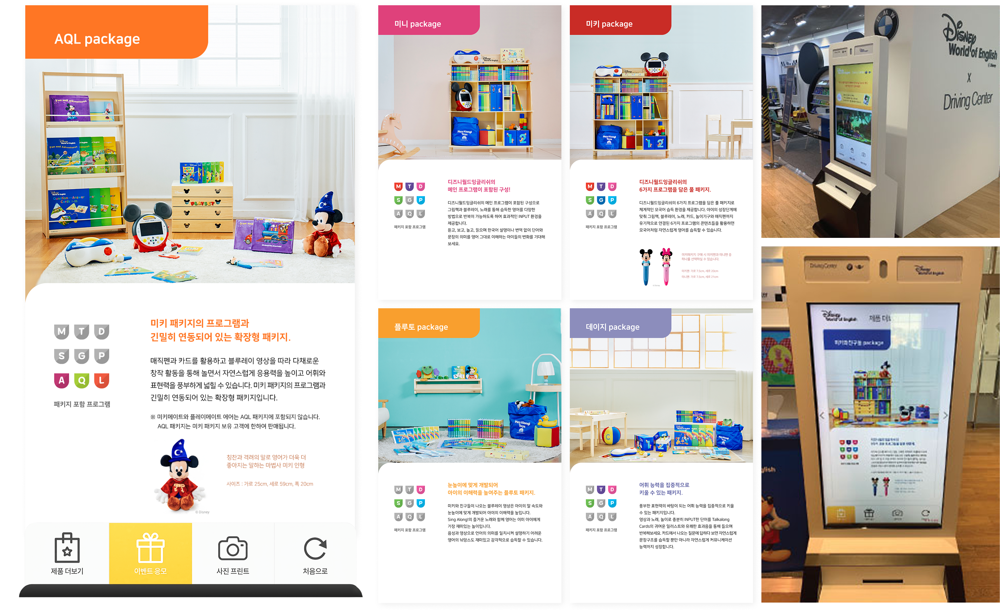
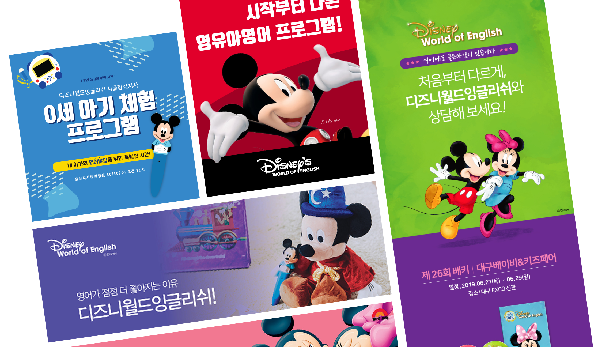
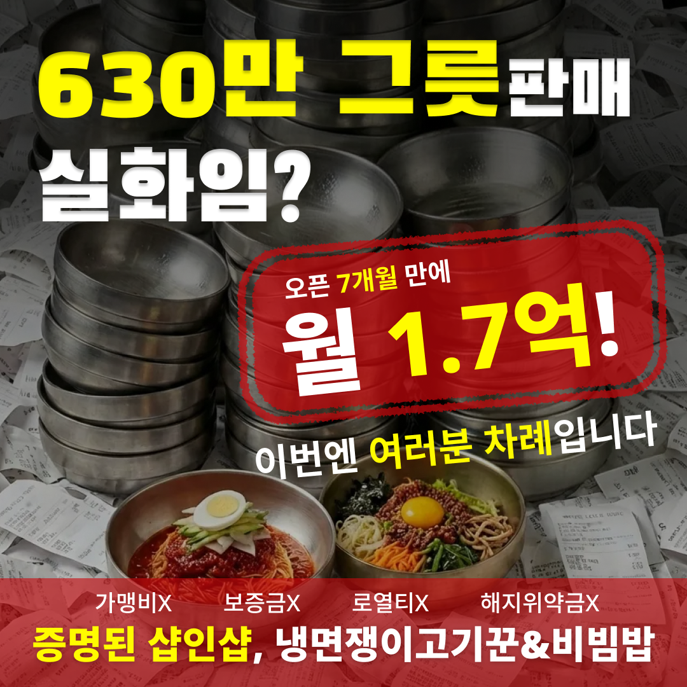
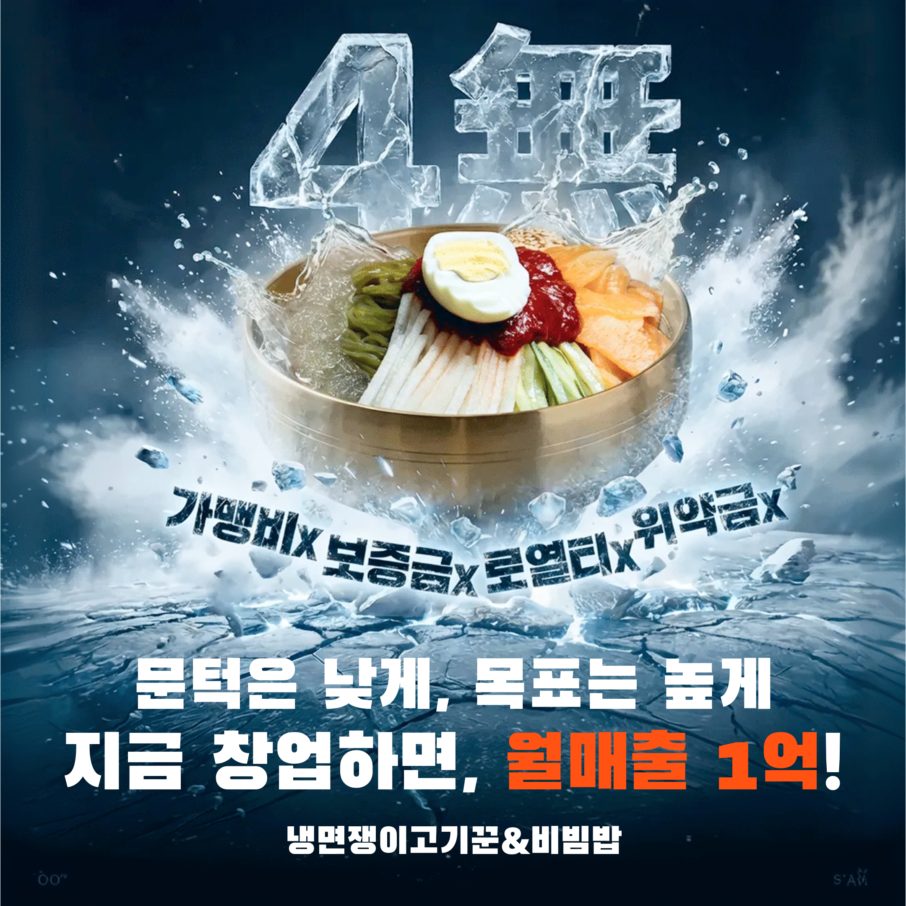

가설 설정
증상 페인포인트와 제품 솔루션을 연결하여 정보를 제공하면 전환율을 높힐 수 있다는 가설 설정.
파라미터에 따른 고객별 최적화 페이지를 제공하여
유입 → 노출 → 측정 테스트 파이프라인 설계.

증상 페인포인트와 제품 솔루션을 연결하여 정보를 제공하면 전환율을 높힐 수 있다는 가설 설정.
유입 경로에서 사용자의 증상 파라미터를 파싱. '허리 통증'으로 온 사용자와 '목 통증'으로 온 사용자에게 다른 서사 제시.
Unbounce를 이용하여 섹션을 파라미터값에 따라 스위칭하여 증상별로 조합되도록 설계.
CTA 클릭,스크롤 깊이, 이탈율을 체크하기 위해 GA4 이벤트 설정. 디자인 요소의 유효성을 데이터로 추적 가능한 구조 설계.
BMW 드라이빙 센터 체험존 내 고객 참여 유도를 위한 터치형 키오스크 UI 디자인.


우주만물상의 다양한 소재에 맞춰 퍼포먼스 소재 디자인.

